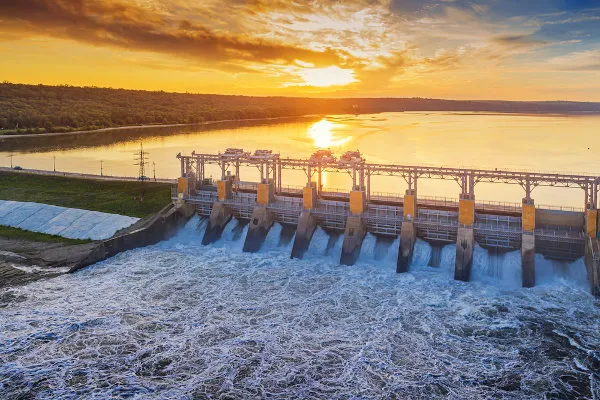
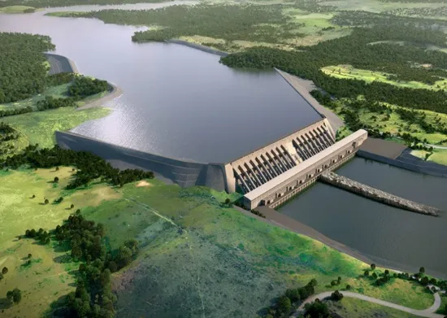

Energia Hídrica

Usina Hidrelétrica de Jaguara
A Energia Hídrica ou Hidrelétrica é a energia obtida a partir do potencial gravitacional da água corrente e de quedas d'água.
O processo de geração de energia hidrelétrica acontece nas usinas hidrelétricas, que captam a água dos rios e
a conduzem até turbinas. As turbinas transformam a energia potencial da água em energia mecânica e, por fim, em elétrica.
Vantagens e Desvantagens
É a fonte mais barata a médio e longo prazo, produz quantidades pequenas de gases do efeito estufa, é renovável,
limpa e utiliza um recurso inesgotável da natureza, podendo até ser reaproveitada. A geografia do Brasil é
propicia para gera-la, além do baixo custo ao consumidor.
No entanto, a construção de barragens para geração de energia hidrelétrica pode causar impactos ambientais e
sociais, como: Desmatamento, Alterações no clima e nas chuvas, Impactos na comunidade local, Geração de metano,
Mudanças no fluxo de rios.
A energia Hídrica no Brasil e no mundo
A energia hidrelétrica também conhecida como energia hidrica é a principal fonte de energia do Brasil,
representando mais de 60% do total. O país tem um enorme potencial hídrico, o que justifica os investimentos
em hidrelétricas.
A presença de uma densa rede de drenagem que banha o território nacional (principalmente nas regiões sul e sudeste),
a qual é composta por grandes rios caudalosos formados sobre terrenos planálticos, com desníveis que favorecem as quedas
d'água e a formação de correntezas.
Os reservatórios das usinas hidrelétricas conseguem controlar o fornecimento de
energia, equilibrando oferta e demanda com uma fonte sustentável e renovável de energia, essencial para o desenvolvimento
as demais fontes de energia renováveis e intermitentes, estes são fatores essenciais para o investimento do Brasil
nessa fonte de energia.
Com o compromisso com as energias renováveis e acompanhando essas oportunidades, a Neoenergia, uma das maiores
empresas do setor elétrico, investe em quatro usinas hidrelétricas no país: Itapebi, Corumbá, Dardanelos,
Baixo Iguaçu.
De acordo com o Operador Nacional do Sistema Elétrico (ONS), as hidrelétricas estão em 16 bacias hidrográficas nas
diferentes regiões do Brasil. São áreas próximas aos rios brasileiros com maior capacidade em operação de usinas
hidrelétricas: Tocantins, São Francisco, Grande, Paraná, Iguaçu e Paranaíba.
Segundo o Relatório de Segurança de Barragens (Agência Nacional de Águas e Saneamento - ANA,2024),
o setor elétrico brasileiro armazena 89% da água armazenada em todo o território nacional.
Trata-se de uma importante contribuição do setor elétrico à segurança hídrica nacional, assim,
as usinas hidrelétricas com reservatórios de acumulação contribuem para a perenização de rios e mitigação
dos efeitos danosos das mudanças climáticas nos rios brasileiros.
10 maiores hidrelétricas do mundo
1º Usina de Três Gargantas – China (18.200)
2º Usina de Itaipu – Brasil (14.000MW)
3º Belo Monte – Brasil (11.233MW)
4º Guri – Venezuela (10.200 MW)
5º Tucuruí I e II – Brasil (8.370 MW)
6º Grand Coulee – Estados Unidos (6.494MW)
7º Sayano-Shushenskaya – Rússia (6.400MW)
8º Krasnoyarsk – Rússia (6.000MW)
9º Churchill Falls – Canadá (5.428 MW)
10º Usina La Grande 2 – Canadá (5.328 MW)
Destaque maiores usinas brasileiras
 Usina de Itaipu
Usina de Itaipu
A Usina de Itaipu é a maior hidrelétrica brasileira.
Ela está localizada no rio Paraná, na fronteira entre o Brasil e o Paraguai.
Logo, é administrada pelos dois países, sendo chamada de Itaipu Binacional.
Ela é responsável por parte importante do abastecimento desses dois países sul-americanos.

Usina Hidrelétrica de Belo Monte
A Usina Hidrelétrica de Belo Monte é a segunda maior usina hidrelétrica do Brasil, em termos de potência instalada.
Ela está localizada no rio Xingu, no Pará. A usina tem capacidade para gerar 11.233 megawatts de energia elétrica.